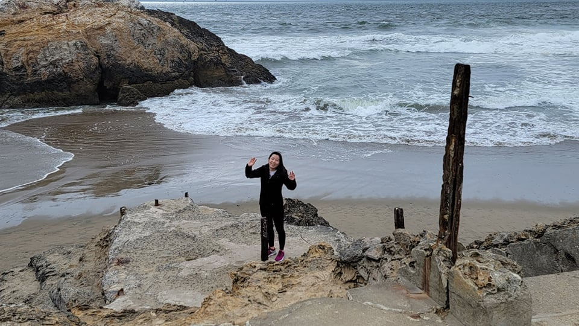
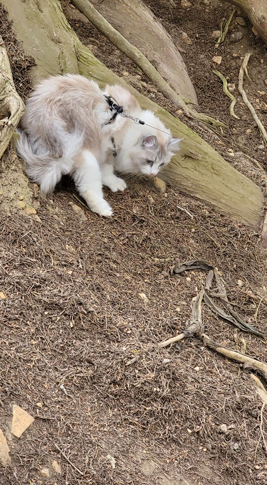
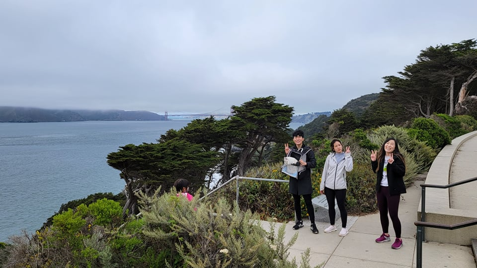

First week in San Francisco. Let's see what happened.
Tuesday wasn't super productive. Other than writing the last journal article, I worked a bit on getting our furniture in the right place.
I also had a conversation with Emmet. Looks like Inrupt is willing to fund the project Tim wants me to do, but with one caveat. Tim's projects tend to balloon in scope, so Emmet doesn't want to pay on a per-day basis. Rather he'd prefer to pay in a lump sum once I've completed the project. That means that I'm responsible for getting the scope from Tim and quoting the project. So, that's what I'll do.
On Wednesday it was back to work. You remember how I had a goal to write two chapters a month? Well, I had only completed one chapter at this point and I needed to complete Chapter 14 of Star Jump. So, I spent most of the day working on that, but unfortunately I didn't finish. It's Laut's motivations, once again, that served as a blocker. Eventually, I just decided that instead of finding some way she should be motivated to rescue Anyo, I'll just put her into a series of unlikely scenarios that lead her to Anyo and play it for comedy. I think it worked out well in the end.
Other than that, some of our stuff came in (a day late mind you). We found out that our microwave was broken in the move :(. In hindsight, we probably shouldn't have shipped the microwave.
I completed the chapter on Thursday! I'm wondering if I'm too slow producing these chapters. I might put a little too much thought into them when I should just be writing. Even if its bad writing it might jog my memory a bit more so I can get chapters out. I already will need to do a lot of editing on a second pass, so maybe it's not so bad.
Other than that, I found out I didn't have enough money in my checking account to pay my credit card bill. Thankfully I have plenty in my savings account but it will take 3 days for it to transfer. In the mean time, I have to pay the overdraft fee :(
We also went to Delores Park!
The day started with a meeting with Pieter Colpaert, a professor working with Communica. He originally reached out to me to see if my Subscribable dataset intersected with some of his work. I told him it didn't, but then I started to describe some of the dev tools I was working on. He seemed interested and even mentioned that he could probably fund some of the work. That's fantastic! It might be another potential source of income. I was planning on building these libraries eventually anyway, so it would be great to have some funding behind it.
With the next chapter done, I made my goal for Friday to unpack all the belongings that arrived. But, before I did that, I needed some place to store things. I was going to buy a set of drawers at IKEA, but they were out of them at that time, so I started a quest to find a cheap set of drawers. Most of the furniture stores near me had furniture that was too overpriced, which landed me at the Salvation Army store 10 blocks away. I found a good shelf and carried it 10 blocks back. In hindsight, I probably should have taken an Uber or BART.
In the evening, we met up with Jonathan and Priscilla. We ate Farmhouse Thai and came back for a lively conversation!
On Saturday, Ailin and I completed unpacking for the most part. We still have a ton of boxes with no place to put them. We'll just need to wait until our bed and bedstand come in so we can shove them underneith.
At the end of the day, we went to Lands End with Jonathan and Priscilla. They brought their cat, Yuki, on the hike with us. I wonder if Licky would be open for a bit of adventure.
  After Lands End, we had dinner and watched a movie with Jonathan and Priscilla: Stowaway, a space movie. It's plot was mediocre.
On Sunday, it was back to work on the traverser. I completed all the fancy typescript that I wanted to implement other than the stuff that requires a turing complete solution. I decided that instead of implementing that, I should go back to the regular dev-tool route. The only thing that doing turing complete typescript can accomplish is the fun video I eventually want to produce, but I'll get back to that when I feel the inspiration. Plus, building the ShexJ traverser out of the general traverser will give me more test cases.
On Monday, I spent almost the entire day playing Minecraft with James. He set up a new server on the latest update and I only stopped when it was time for him to go to bed in Eastern Time.
After playing Minecraft, I started planning the new segments of the Solid Social Media series. I decided they need to feel a bit more like shorts. That means faster talking and more digestable content in general.
Today, it was back to regular work. I have three potential clients and I needed to follow up with them:
After following up, I called wells fargo to figure out the overdraft thing again. Because of the holiday weekend, it's been taking a while to transfer the money from my savings account.
Then I started writing this post. Next week, here are my goals: